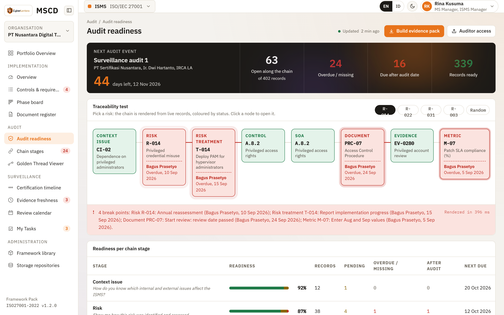

Prove compliance from context to evidence.
One traceability chain for ISO/IEC 27001, 9001, 22301 and 37001. When a link breaks, you see it before the auditor does.

16 items due after the audit
Flagged the day they were created.
Evidence file missing
Control held at Partial until re-linked.
One engine, many frameworks
Harmonized Structure as the backbone.
Four standards, one chain. A multi-standard organisation stops doing the same work four times.
Traceability test
Pick any risk. Watch the auditor's question answered node by node.
Live records, colour-coded by status. Every unready node names the holder and the due date.
Ready: relation exists and evidence is from this cycle
Pending: assigned, due before the audit
Broken: overdue, missing, or no mandatory relation


Named accountability
What is still pending, who holds it, and when is it due.
One screen. Items due after the audit are flagged the moment they are created.
A named person on every pending item, never just a role
Reminders sent and logged by the platform
After-audit flag recalculated when the audit date moves
Deployment and data residency
Your cloud, your data centre, your repository.
Who operates it and where the bytes live is your call.
Your people
Browser
SSO, MFA, per-system roles
{{ dp.mscdKicker }}
MSCD
{{ dp.mscdSub }}
Your repository
Files stay here
SharePoint, Drive, SMB, S3
{{ dp.routeTitle }}
{{ dp.routeText }}

Implementation
Build the system
Gate enforcement keeps the SoA honest before anything else opens.

Audit
Go through the audit
Any auditor question answered from a single identifier.

Surveillance
Keep the certificate
Evidence age and quiet decay caught between audits.
Zero Major NC at the first certification audit.
Start with one management system. Bring the others onto the same chain.